Part 1: Filters and Edges
1.1 Convolution Implementation
Implementation
def conv2d_2_loops(image, kernel):
padded = np.pad(image, ((kernel.shape[0] // 2, kernel.shape[0] // 2), (kernel.shape[1] // 2, kernel.shape[1] // 2)))
out = np.empty_like(image)
out.fill(0)
for i in range(out.shape[0]):
for j in range(out.shape[1]):
out[i, j] = np.sum(padded[i : i + kernel.shape[0], j : j + kernel.shape[1]] * kernel)
return outOriginal Image
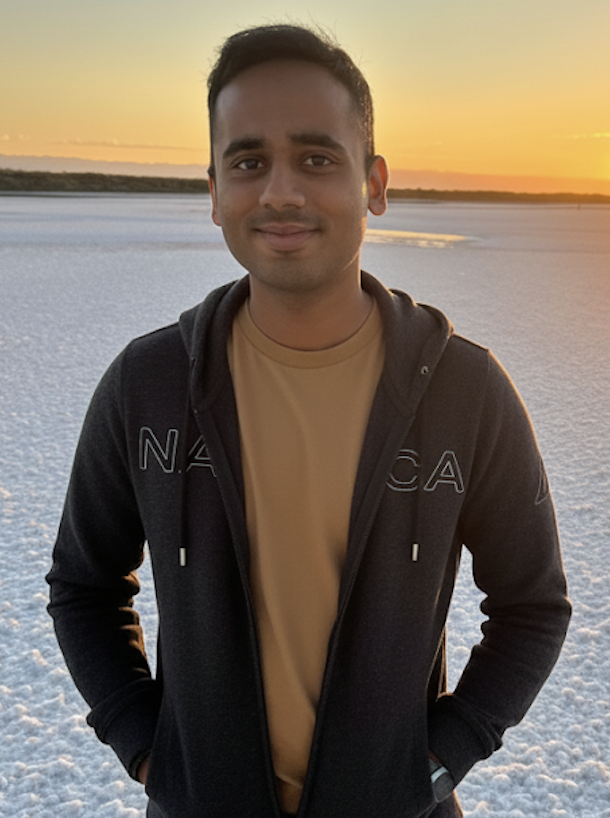9x9 Box Filter Convolution
Derivative Filter Dₓ
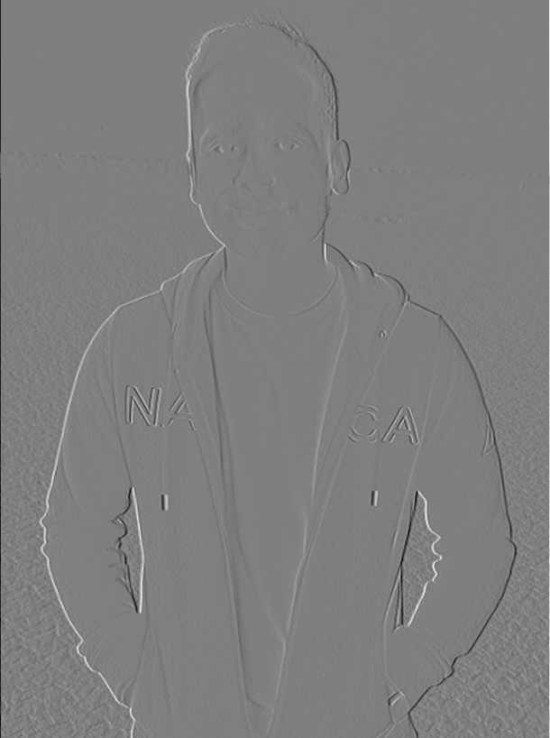Derivative Filter D_y
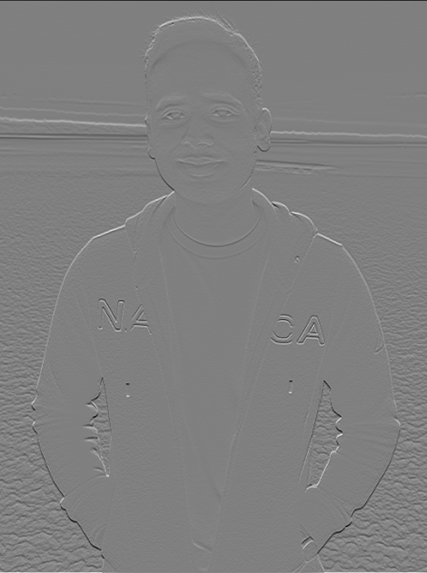Comparison with scipy.signal.convolve2d
I prototyped both a four-loop reference and the vectorised two-loop version above. Both use explicit zero padding via np.pad, so their boundaries match signal.convolve2d(..., mode="same", boundary="fill"). Numerically the custom outputs are very similar from builtin (max absolute error 5.9 x 10-8), but the runtime differs dramatically: collapsing the innermost loops into a NumPy dot makes the two-loop variant roughly 4-5 times faster on the 512x512 test image, while SciPy's C implementation is another order of magnitude faster thanks to cache-friendly blocking.
1.2 Partial Derivatives and Edge Detection
Original Image

Partial Derivative (X)
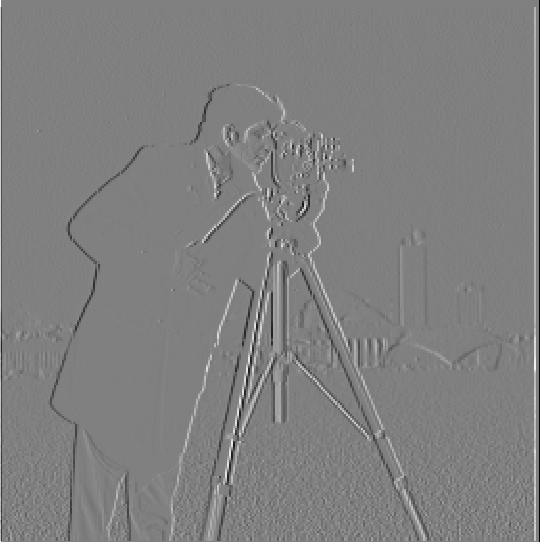Partial Derivative (Y)
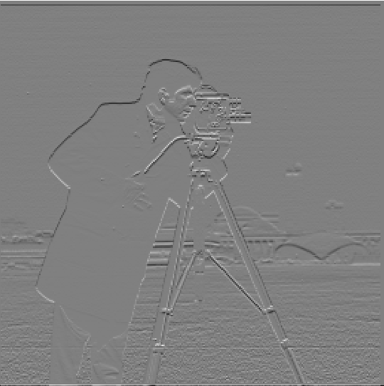Gradient
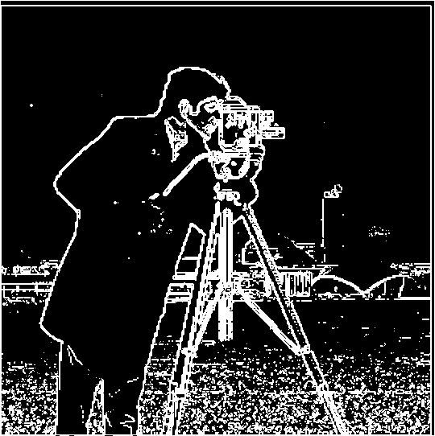Binarized
Edge Detection Methodology
Filtering the cameraman with the finite-difference kernels from part 1.1 produced gradient magnitudes in the range 0–1.41. Inspecting the distribution (median 0.016, 95th percentile 0.315) showed that most background variation is tiny, so I thresholded at 0.1: high enough to eliminate shadows and sensor noise, but still low enough to keep the tripod, skyline, and coat outlines. The final binary mask casts the surviving pixels to uint8 for easier downstream processing.
1.3 Gaussian and Difference of Gaussians (DoG)
Filter Responses
Gaussian Convolution
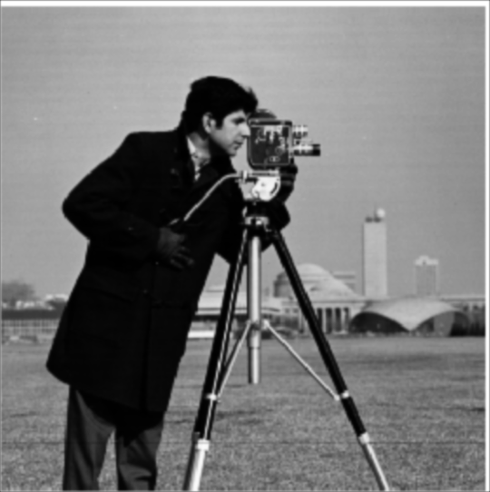Gradient Magnitude (Blurred)
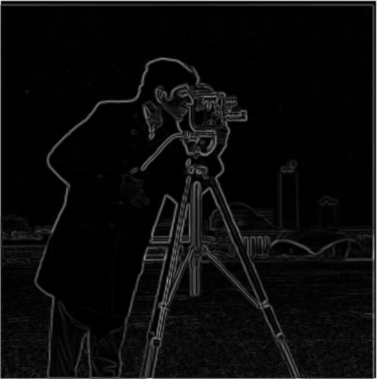Edges via DoG
Results on Cameraman Image
Original
Edges After Gaussian Blur
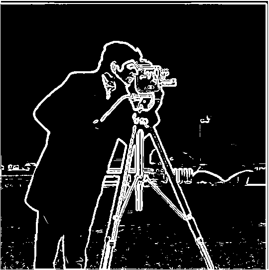DoG Edge Map
Comparison with Finite Difference Method
I first built a 9×9 Gaussian with σ=1 using cv2.getGaussianKernel, blurred the image, and differentiated the result. Convolving the Gaussian with the derivative filters yields a separable DoG operator whose responses closely match the smoothed gradients but suppress stray noise around the tower. Compared with the raw finite-difference edges from part 1.2, the DoG map keeps the broad contours while discarding isolated speckles, showing how scale selection stabilises the detector.
Part 2: Applications
2.1 Unsharp Mask Filter
I modelled sharpening as sharp = (1 + \alpha)I - \alpha (G_\sigma * I) with σ = 1.5 and α = 1.0 for the headline results. Precomputing the combined kernel keeps the operation to a single convolution, and tuning α exposes the trade-off between contrast boost and halo artefacts.
Taj Mahal Image Results
Original
Sharpened
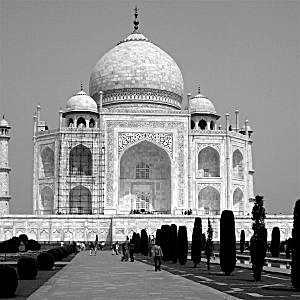Custom Portrait Pipeline
Original
Blurred
Sharpened Output
Blurring and re-sharpening a portrait shows the limits of the technique: the reconstruction reduces the 9x9 Gaussian blur (MSE ≈ 3.1x10-4) but still trails the ground truth and introduces faint halos along high-contrast ridges.
2.2 Hybrid Images
To build each hybrid I aligned the image pairs with the provided point-based tool, converted them to grayscale, and then blurred the low-frequency image with σ=10 while extracting σ=3 high-frequency residuals from the other image. I recentred the high-pass component before adding it back so the hybrid remains in a valid intensity range and finally rescaled to [0,1] for saving.
Derek + Nutmeg (Detailed Process)
Original Inputs
Derek

Nutmeg

Aligned Stack
Fourier Magnitudes (log)
Band-pass Selection
I used σlow=10 for Derek and σhigh=3 for Nutmeg, which keeps the face-level structure in the low-pass channel while preserving Nutmeg’s wrinkles as the high-frequency detail.
Filtered Components
Low Frequency (Derek)
High Frequency (Nutmeg)
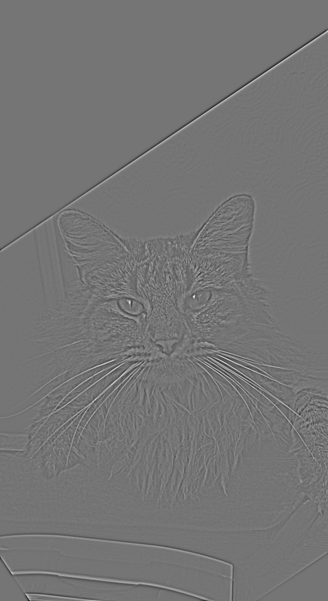Final Hybrid Image
Additional Hybrid Images
Dog + Cat
Original Dog

Original Cat

Hybrid Result
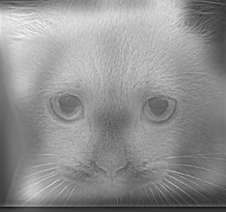Wolf-Dog + Doodle
Original Wolf-Dog
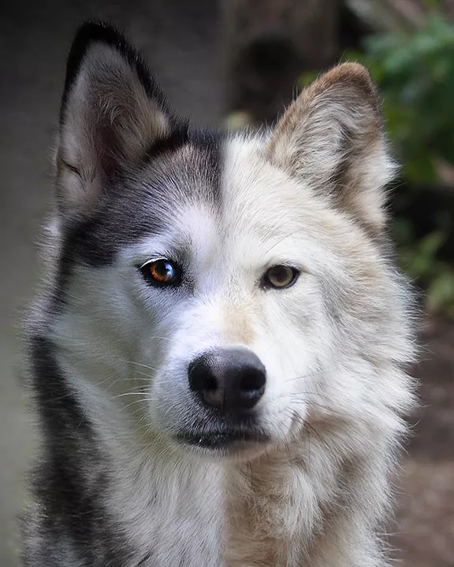Original Doodle
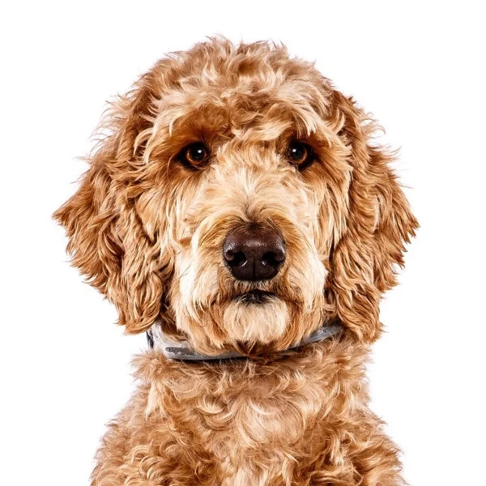Hybrid Result
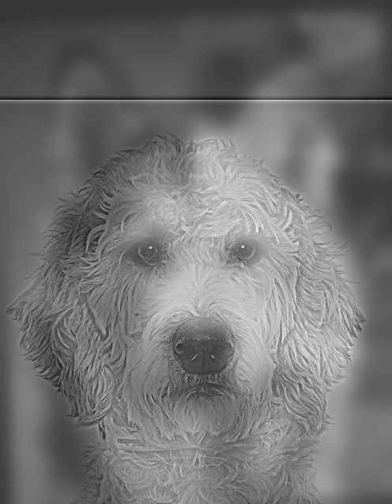All hybrids reuse the (σlow, σhigh) = (10, 3).
2.3-2.4 Multi-resolution Blending
I reproduced the orange+apple example by constructing five-level Gaussian and Laplacian stacks with σ = 2.0 between levels. The figure above shows three representative bands for each source image, the blended band, and the reconstruction, highlighting how low frequencies mix smoothly while high frequencies remain localised.
Custom Blended Images
For each custom blend I blurred a half-plane mask with a Gaussian whose width scales with the image size (≈8% of the width).
Blend 1: Apple + Orange (Oraple)
Image 1

Image 2

Blended Result
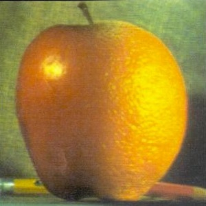Blend 2: Man + Woman
Image 1
Image 2

Blended Result
Blend 3: Cat + Dog
Image 1
Image 2